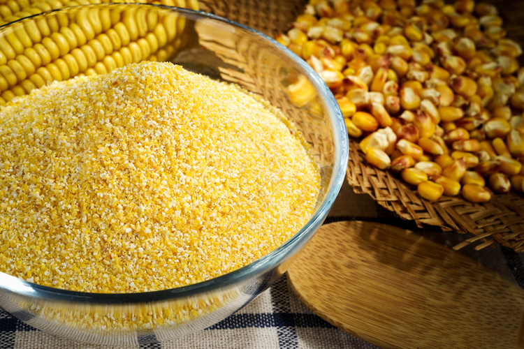
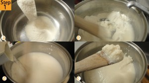
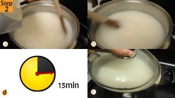
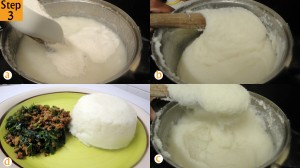

Sadza (Shona language) is perhaps the most enduring, widely and frequently consumed carbohydrate source
in the main course of meals all over the African continent.
With names varying from vuswa, pap, or bogobe
in Xitsonga, South African English and Setswana respectively; nsima in Chichewa or isitshwala in isiNdebele
to ugali in East Africa's Swahili language, the meal, which is mainly consumed for lunch or dinner alongside a variety of delicacies depending on which part of the continent you happen to be,
is essentialy made from maize meal or pounded millet and water. The outline below serves to explain to you how to prepare sadza.

Maize meal, left(in a bowl), the key ingredient in sadza preparation.
Materials and ingredients
A pot whose size depends on the quantity you desire to cook
A kettle
Pure water
A flat-sided wooden stirring spoon
Maize meal
A stove
Procedure
Step 1

Mix the cornflour and water: Add little room temperature water to the desired quantity of the cornflour in a pot and using a flat-sided wooden spoon mix the two up until the maize flour-water mixture is homogenous.
Boil water in excess, separately, in a kettle simultaneously.
Step 2

Prepare the soft Porridge: Place the pot with maize flour-water mixture over medium heat, slowly add boiling water, stirring until the thick, stable porridge formed starts to simmer. Leave it to simmer for about 15 minutes with the pot's lid closed.
Step 3

Make the Sadza: Once the porridge has been prepared, add more cornflour to the porridge stirring continuously with a ladle until you get the desired consistency.
Sadza is eaten with an accompanying dish of either a meat (nyama) based stew or some kind of vegetable.
For the recipes of some of the dishes that usually accompany sadza, check out the page on roast beef and fried vegetables or madora (mupane worms).